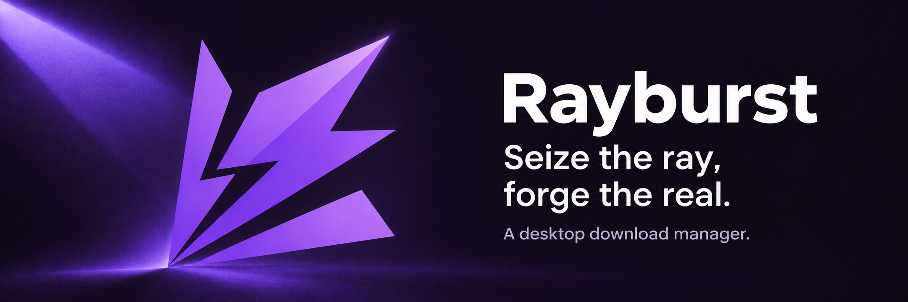
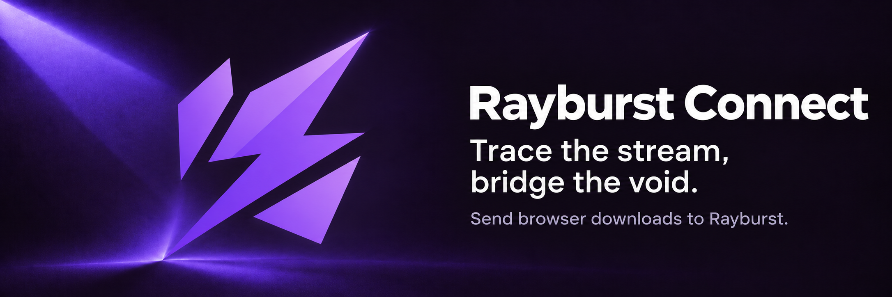

Your downloads, on your desktop.
Manage files, torrents and streams in one place. Choose what to save, pause when you need to, and pick up where you left off.
- Files and torrents
- HTTP, HTTPS, SFTP, BitTorrent and ED2K. Queue tasks, set bandwidth limits and choose individual torrent files.
- Streams you can keep
- Select HLS or DASH tracks, save as MP4 or MKV, and finish live recordings when you are ready.
- Quiet in the background
- Tray controls and a lightweight mode keep downloads running while the main window is closed.
Available for Windows, macOS and Linux. Powered by aria2-next.

From the browser to Rayburst.
Send downloads with a click, set rules for your sites, or inspect media found in the current page. Choose tracks in the popup or beside the player.
For Chromium browsers and Firefox. Requires the Rayburst desktop app.